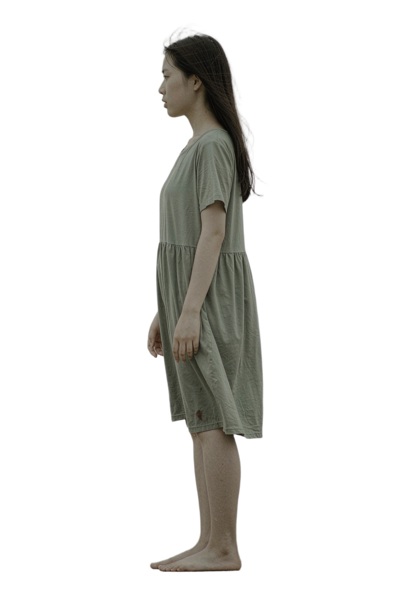
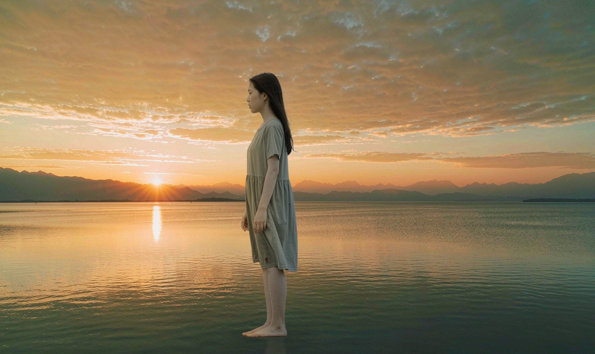

10
0 / 100
FINAL
完成一张灰雾中的照片，现在有了自己的光。
把这个人物放到夕阳湖边，光线要暖。
PLAN / 5 STEPS
T01 分离主体
T02 生成环境
T03 估计光向
T04 接触阴影
T05 输出成片
我会先分离主体，再建立新的场景。

ALPHA62.0%
远景
地面
水面
我保留了它的姿态，为它建立新的环境。
LIGHT DIR0°
COLOR TEMP0K
我不改变它，只是先看清它。
DRAG THE LIGHT
我把环境光重新分配到人物身上。
脚 · 水面 · 接触阴影 — 画面里只有这三样东西。
让它站稳。

色温→边缘→噪点→景深
让我检查一下。
AGENT SELF-CHECKTHRESHOLD 80
LIGHTING94
SHADOW78← 未达标
COLOR95
EDGE97
SHADOW 78 < 80 → reroll T04 回到 GROUND 重跑
好了。
AI AGENT
现在，让我处理你的图片。
DROP AN IMAGE
或点击选择 · JPG / PNG / WEBP
UPLOAD已收到
portrait_0427.jpg
PROCESSING · LIVE
- 上传排队中
- 解析排队中
- 理解主体与场景排队中
- 就绪—
每一步都给出视觉证据，而不是只有一句「正在处理」。
先告诉我，你想怎么改。
把这个人物放到夕阳湖边，光线要暖。
按住说话 · 也可以直接打字
AGENT PLAN
- 主体
- 人物 · 保留原姿态
- 场景
- 夕阳湖边 · 浅水
- 光线
- 暖光 · 左侧
32° - 阴影
- 自然接触阴影